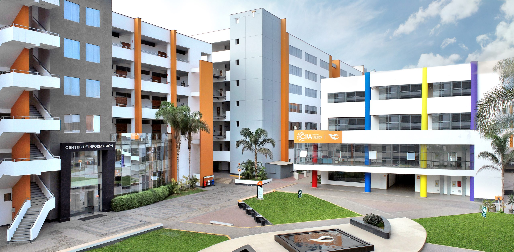
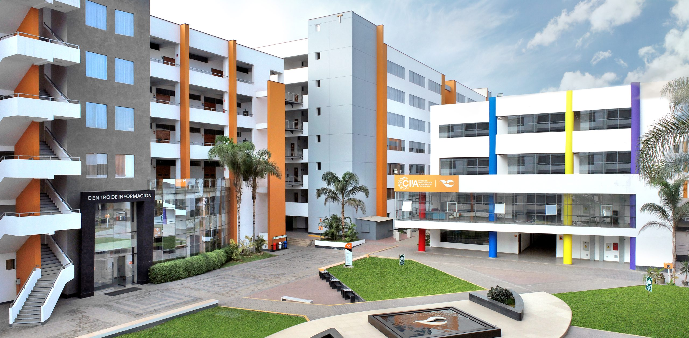

1. DESCRIPCIÓN DEL CURSO
La experiencia curricular de Inteligencia Artificial corresponde al área de estudios específicos, es de naturaleza teórico-práctica y tiene como finalidad desarrollar habilidades para implementar sistemas con inteligencia artificial. Las unidades de aprendizaje incluyen: I. Introducción y técnicas básicas; II. Técnicas avanzadas.
2. COMPETENCIA DE LA ASIGNATURA
Interpreta y aplica la inteligencia artificial en la elaboración de sistemas expertos, de acuerdo a las necesidades del mercado, demostrando responsabilidad, originalidad e innovación.
3. RESULTADO DE LA ASIGNATURA
Al finalizar el curso, el estudiante implementará un sistema inteligente como solución a un problema utilizando métodos y técnicas de Inteligencia Artificial, con responsabilidad, originalidad e innovación.
4. OBJETIVO
Al finalizar el curso, el estudiante implementa un sistema inteligente como alternativa de solución a un
problema utilizando métodos y técnicas de Inteligencia Artificial, con responsabilidad, originalidad e
innovación.
5. METODOLOGÍA
El curso utilizará la metodología de Aprendizaje Basado en Problemas (ABP), enfocándose en la resolución de situaciones reales del ámbito laboral. Se presentarán desafíos prácticos que el estudiante deberá resolver de manera creativa, con la orientación del docente, consolidando así sus conocimientos conceptuales y técnicos.
Durante el curso, se emplearán herramientas digitales como lenguajes de programación, bases de datos, y recursos multimedia, así como plataformas colaborativas, organizadores gráficos y entornos de gamificación. También se utilizarán laboratorios y espacios fuera del aula para reforzar el aprendizaje práctico.
Además, el curso contempla la inclusión de estudiantes con discapacidad mediante estrategias de accesibilidad, apoyadas en adaptaciones tecnológicas para eliminar barreras en el acceso a la información. La evaluación será continua, abarcando proyectos aplicados, trabajos en equipo, presentaciones, foros de discusión, y pruebas escritas y orales.
6. EVALUACIÓN
La evaluación del curso seguirá los lineamientos del Modelo Educativo UA23, centrado en los desempeños del estudiante y valorando su capacidad de resolver situaciones de manera efectiva. El sistema de evaluación comprenderá tanto la evaluación formativa como la evaluación sumativa, distribuidas en tres momentos del curso:
EC (Evaluación de Conocimientos - 10%): Se realizará en la semana 06 y medirá los conocimientos adquiridos por los estudiantes mediante un examen de conocimientos. Esta evaluación tendrá una ponderación del 10% del promedio final.
EP (Evaluación del Progreso - 40%): Se llevará a cabo en la semana 04 y evaluará el avance del resultado de aprendizaje a través de listas de cotejo y rúbricas analíticas. Su ponderación será del 40% del promedio final.
EF (Evaluación Final - 50%): En la semana 08, se comprobará el logro del resultado de aprendizaje también por medio de listas de cotejo y rúbricas analíticas. La ponderación de esta evaluación será del 50% del promedio final.
El promedio final se calculará de acuerdo con la siguiente fórmula:
(EC * 0.10) + (EP * 0.40) + (EF * 0.50)
Categoría conceptual: Evaluación de los principales tópicos teóricos desarrollados en el curso.
Categoría procedimental: Evaluación de la aplicación práctica de los conocimientos adquiridos en situaciones reales o simuladas.
Categoría actitudinal: Evaluación del desempeño del estudiante en cuanto a la apropiación de valores institucionales y su comportamiento frente a diversas situaciones.
Para aprobar el curso, el estudiante debe obtener una calificación mínima de 10.5 puntos en el promedio final. Por la naturaleza del resultado de aprendizaje, no se aplicará un examen sustitutorio en esta asignatura.
 
